处理异常
回顾
- 上次后台servlet接收到了网页post过来的参数
- 尝试处理
- 但是出了错误
- 这个怎么办呢？
分析现状
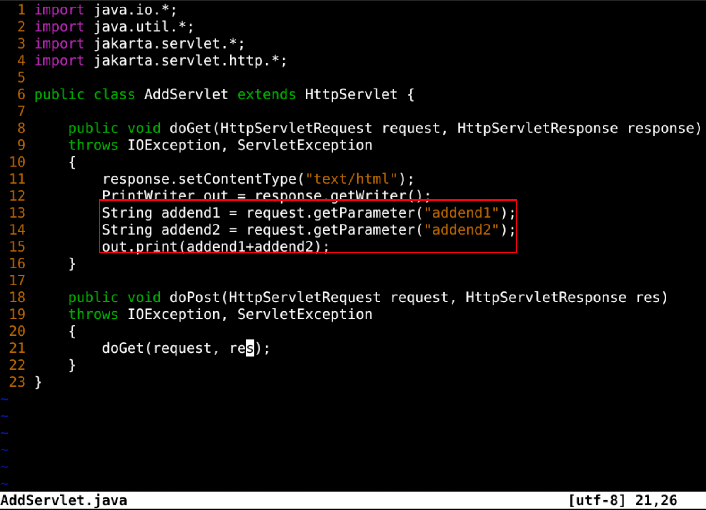
- 这部分有问题
- 加法是按照字符串相加处理的
- 需要的是数字相加
修改
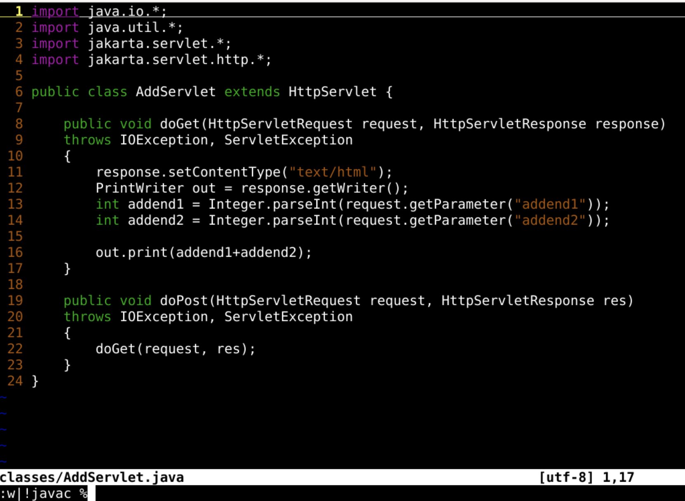
结果
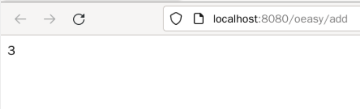
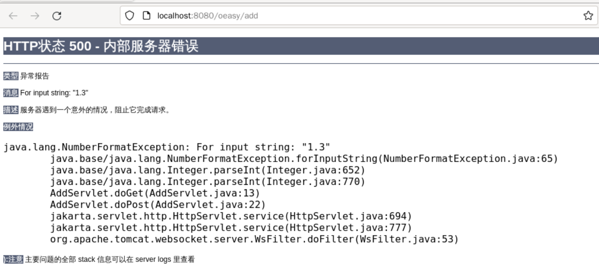
修改
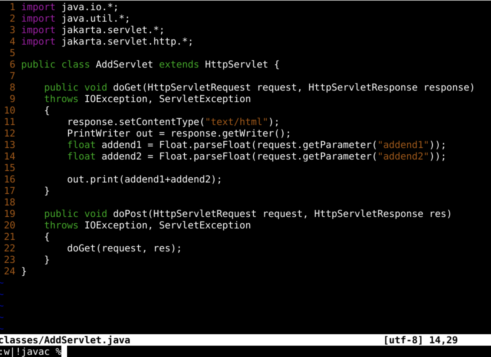
- 把转化函数修改为Float.parseFloat
- 就可以把参数转化为小数了
- 并进行运算了么？
运算成功
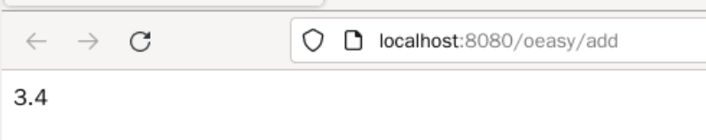
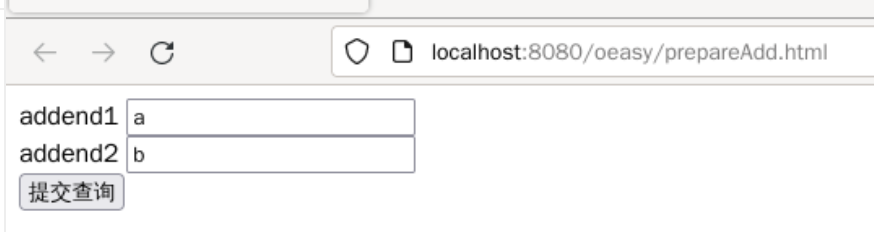
异常
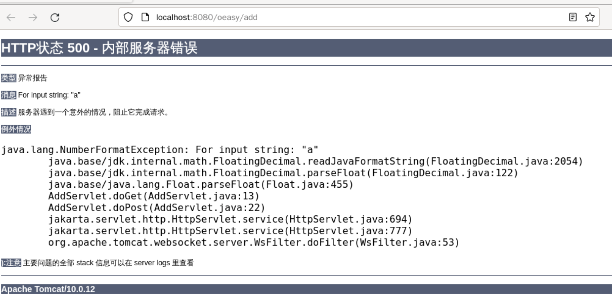
- 发现了NumberFormatException
- 并没有进行处理
处理异常
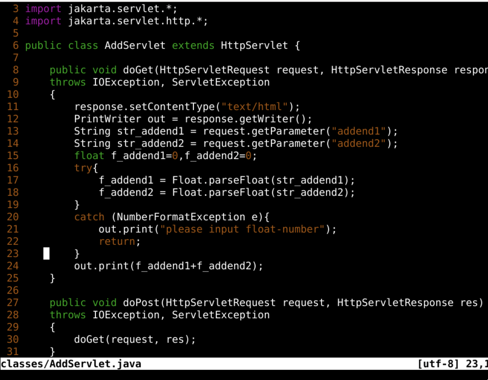
- 如果捕获了这个异常
- 就输出错误信息
- 然后return
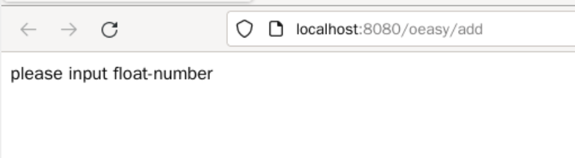
- 确实解决了这个问题
- 但如果系统跳过prepareInsert.html
- 直接调用/add呢？
错误
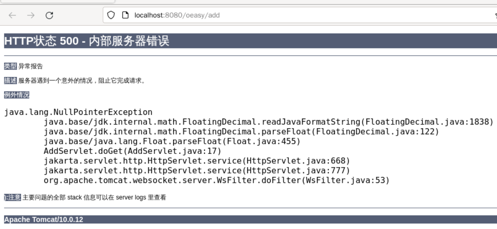
- 网页会报NullPointerException
- 空指针异常
- 这也需要处理
处理空指针
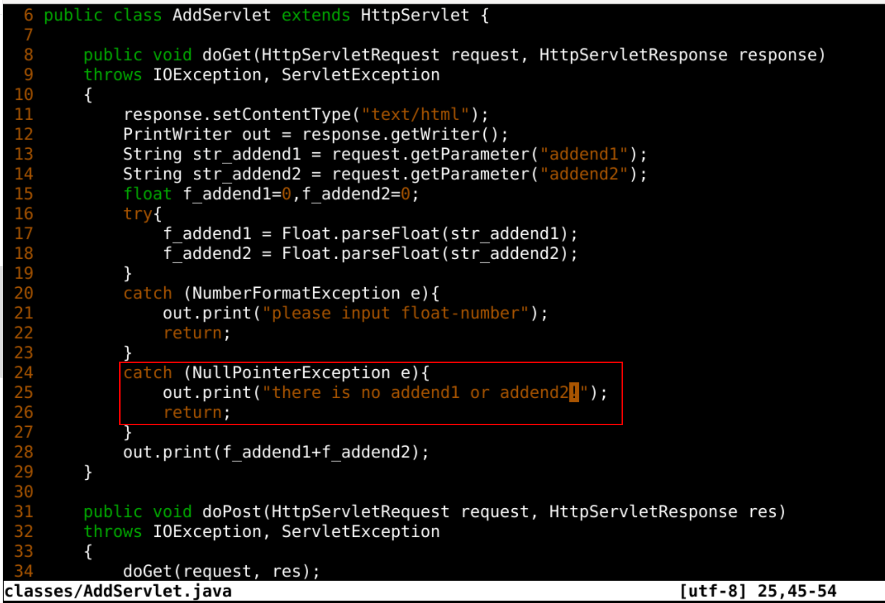
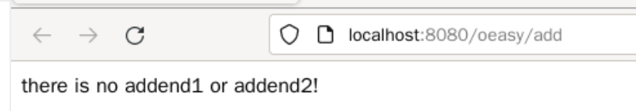
服务
- 不能哪壶不开提那壶
- 而是处理周全
- 要什么给什么
- 知道可能会出什么错
见过世面
- 客人多了什么样的情况都有可能发生
- 就需要堂客留神长眼
- 我们开发网站应用也要长个心眼
- 先把当前这个应用备份到本地
备份应用
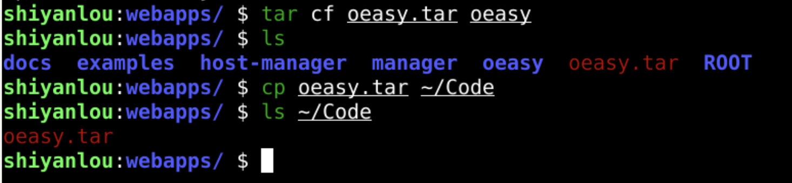
- 把app打成tar包
- 放到~/Code里面
- 然后用蓝桥右侧的下载代码下载到本地
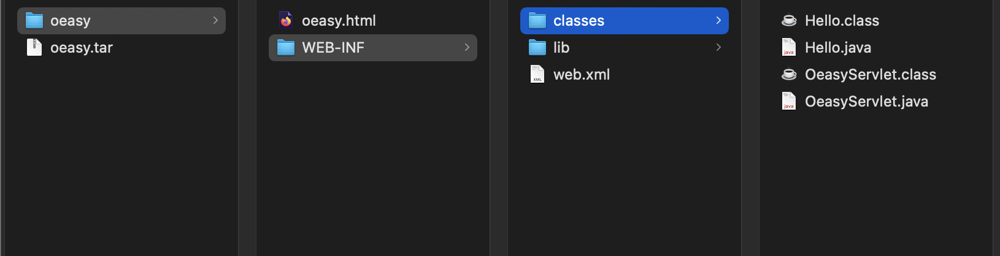
- 以后直接上传这个tar包就可以恢复oeasy应用了
总结 🤨
- 我们处理了后台加法运算中
- 不过后台最重要的还是操作数据库！
- 这后台数据库究竟如何操作怎么做？🤔
- 下次再说！👋